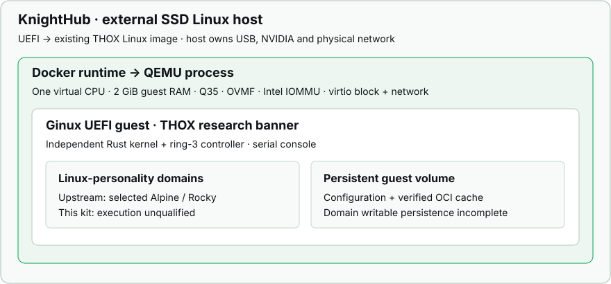

ThoxOS / research engineering guide
ThoxOS Ginux Research Edition
Evaluate an independent Rust kernel inside a reproducible THOX research guest, while retaining the established Linux host for KnightHub hardware.
Your AI. Your Data. Your Rules.™
The external SSD boots the existing THOX Linux image. QEMU boots Ginux inside that host. Docker packages the QEMU demo; Docker alone does not replace its Linux host kernel.

01 / source review
What Ginux establishes
Ginux is an Apache-2.0 Rust-first x86-64 operating-system prototype. It builds one UEFI executable containing the kernel, boot catalog and embedded controller. Linux-compatible userspace runs in kernel-native domains. OCI is its filesystem delivery format, not its execution boundary.
The current validated development profile is QEMU Q35 with OVMF, Intel IOMMU and modern virtio devices. Upstream reports selected Alpine and Rocky workloads and Rocky systemd reaching multi-user.target. Those reports are upstream evidence; they are not THOX test results.
| Area | Current evidence | THOX implication |
|---|---|---|
| Boot | Single x86-64 UEFI image under Q35/OVMF | Retain exact virtual device profile. |
| Linux ABI | Selected real programs; many syscall contracts remain partial | Use named workflows only; test each new app. |
| Persistence | Configuration and OCI layer cache persist | Do not rely on domain writable data durability. |
| Devices | Virtio block/network, MSI-X and VT-d paths | No validated physical consumer hardware profile. |
| GPU / CUDA | No current GPU support; CUDA is a later hardware gate | RTX 4060 Ti stays on the Linux host. |
| USB / NVMe | Arbitrary USB deferred; NVMe is a later hardware target | Do not flash Ginux directly as the KnightHub OS. |
| Desktop | Graphical desktop deferred | Demo is a serial controller, not a GUI desktop. |
| Security | Capability mechanisms and test coverage; validation incomplete | No production isolation, audit or compliance claim. |
KnightHub target
The requested machine is an Intel Core i7-14700F with an NVIDIA RTX 4060 Ti 16 GB. Memory was previously reported as 126 GB and 128 GB; the preflight records the actual usable amount. The external SSD model, USB bridge, capacity and firmware boot behavior are not inventoried in this session.
A firmware loader may execute the EFI image while keyboard, display, SSD storage, networking or GPU functions still fail. Native Ginux boot is outside this candidate's supported installation route.
THOX customization scope
The guest adds a clearly marked THOX research banner. It preserves upstream identity probes, ABI identifiers and the ginux> prompt so upstream checks remain meaningful. No THOX platform service, model runtime, MeshStack connection or ThoxWork integration is implied by this branding.
02 / demo
Build and open the research guest
Use an x86-64 Linux Docker host or Docker Desktop with Linux containers. The default is QEMU TCG emulation, requiring no KVM device access. An optional KVM configuration is for a Linux host with /dev/kvm access. Use the qualified 2 GiB guest setting and sufficient free storage for the OCI cache and build dependencies. KnightHub's Linux host retains access to its full hardware memory.
Native build prerequisites
The pinned build requires Rust 1.99.0, GNU Make, Git, Python 3 and Clang supporting x86_64-none-elf. QEMU x86-64 and OVMF are needed to run. Both Rust targets must be installed:
rustup toolchain install 1.99.0 --profile minimal
rustup target add --toolchain 1.99.0 \
x86_64-unknown-uefi x86_64-unknown-none
bash scripts/build-native.shDocker demo
docker compose build
docker compose run --rm ginuxRun from the Ginux module root. The demo opens the real guest serial terminal. It has no browser desktop. To export built files without starting the guest:
docker build --platform linux/amd64 --target artifacts \
--output type=local,dest=artifacts .Native execution uses scripts/run-vm.sh --artifact-dir ./artifacts --state-dir "$HOME/.local/state/thox/ginux". The build emits artifacts/GINUX.EFI, upstream license/notice files and artifacts/build-receipt.json. Retain its full-file SHA-256 with the kit. The Docker runtime evidence below remains separate from the existence of these commands. State is persistent; normal launch does not clear its volume.
The 4 GiB setting panics with an EFI identity-map error. QEMU 8.2 also requires intel-iommu,intremap=off,aw-bits=48; the module launcher supplies this correction. These limits apply to the guest, not the KnightHub Linux host.
03 / observation and recovery
Observe the controller
At the serial prompt
Use these controller commands for the qualified observation demo:
status
components
domain list
help
shutdownThe captured smoke session reached the THOX banner, displayed controller state and embedded components, listed an empty domain table, showed help and shut down cleanly. A separate reboot recovered saved configuration generation 3 with matching thoxconfig settings. These checks do not execute a Linux userspace domain.
Domain execution has not passed
The session encountered a kernel panic while starting the embedded minimal domain. A pristine upstream build reproduced the same failure in this environment. Retain both results as a reproducible research case. The pinned upstream README documents Alpine and Rocky workflows, but this THOX candidate has not accepted those workloads. Do not run production work or use domain execution as an installation acceptance result.
A real serial terminal with the THOX research banner and ginux> controller prompt. A desktop screenshot or browser simulation cannot establish successful Ginux boot.
| Symptom | Check | Recovery |
|---|---|---|
| No VM prompt | EFI hash, QEMU/OVMF paths, serial log | Use the supplied launch profile; do not omit IOMMU or virtio flags. |
| KVM denied | Preflight KVM access result | Use default TCG or obtain normal host KVM access; do not run the VM privileged. |
| OCI pull fails | Guest DHCP/DNS and host egress | Restore intended network access; the initial image pull is online. |
| Domain start panics | Minimal-system-init failure log | Known unresolved failure. Keep domain execution outside acceptance; retain state and logs. |
| SSD installer refuses | USB-root check and artifact digest | Resolve host root/receipt mismatch; do not disable guards. |
| Need to stop demo | Current terminal and guest state | Terminate the foreground QEMU process. Preserve its data directory for diagnosis. |
Back up guest state before any reset. Deleting its volume discards configuration/cache.
04 / external SSD
Install through the existing host image lane
This module installs a guest on an already booted external-SSD Linux host. It does not repartition a disk, install a native Ginux bootloader or replace the established THOX image builder.
1. Inventory and admit the physical target
On Windows, use the existing guarded writer in ports/nicecore/external-ssd/windows/ at the source revision recorded below. Follow its INSTALL_WINDOWS.md. It performs read-only disk mapping before planning any write. Resolve the external SSD by disk identity, bus, capacity and ownership; a drive letter alone is insufficient.
The Vibe image layout and the NiceC0re writer admission format differ. Never pass a Vibe image to the NiceC0re writer. Fresh image-to-writer admission must be resolved in the owning image lane before fresh-media installation. No physical write is authorized by a sample command in this guide. Keep the Windows system drive, protected V: volume and owner-data disks outside the target plan. Back up the selected SSD, verify the exact host image and its admitted manifest, then give the writer its target-specific erase confirmation. If identity or eligibility is unresolved, stop the write step.
2. Boot the Linux host
Choose the external SSD in KnightHub's one-time UEFI boot menu. Verify the installed Linux root is on that USB device, then check display, network and NVIDIA driver behavior. Keep Windows boot entries intact. Secure Boot support must be tested with the actual host image; do not infer it from Ginux's UEFI executable.
3. Install local Ginux artifacts
Place the module kit and host integration tools together. Run the read-only inventory, verify the build-receipt digest against the delivered checksums, then install:
python3 ssd-module/preflight.py --json
sha256sum module-ginux/artifacts/build-receipt.json
sudo python3 ssd-module/install_host.py \
--kit ./module-ginux \
--expected-receipt-sha256 RECEIPT_SHA256 \
--install-dependencies --require-usb-rootRECEIPT_SHA256 is the actual digest from the delivered kit, not text to copy literally. The installer adds ordinary files under /opt/thox/ginux, the thox-ginux command and a terminal desktop launcher. QEMU runs as the signed-in user. This installer does not activate a model service or expose a management port.
4. Launch and retain acceptance evidence
thox-ginuxRecord the Linux host identity, SSD identity, kernel and NVIDIA versions, KVM availability, EFI hash, serial banner, domain result and persistence result. Successful QEMU boot does not establish native Ginux hardware compatibility.
Host image bytes, physical writing, NVIDIA behavior and KnightHub boot remain unaccepted in this session.
05 / Linux host candidate builder
Prepare a Ginux-equipped host image
The package includes ssd-module/build_external_ssd.py, an additive source overlay for the existing thoxos-vibe-rust image lane. It installs the verified guest kit and QEMU/OVMF dependencies into that lane. It does not write a physical device.
1. Obtain the authorized source
git clone https://github.com/ttracx/thoxos-vibe-rust.git thoxos-vibe-rustThe builder selects pinned source e912d82ad9d8e3475a945039b5f16228c9a4bf56 and verifies four source blobs before changing configuration. It creates a self-contained local clone with detached HEAD, preserving the source checkout and its existing work. A linked worktree would leave its Git metadata outside the image builder Docker mount, so the overlay uses a standalone clone.
2. Prepare ordinary files only
python3 ssd-module/build_external_ssd.py \
--source ./thoxos-vibe-rust \
--worktree ./thox-ginux-host-source \
--kit ./module-ginux \
--expected-receipt-sha256 RECEIPT_SHA256 \
--out ./thox-ginux-host-outputRun from the extracted kit root. Supply the authenticated guest receipt digest. Both destination paths must be new. The command records the pinned source, staged file hashes and planned commands in ginux-integration-source.json. Preparation does not build or boot an image.
3. Run the existing build lane when available
To execute, use the same command with fresh source/output paths and add --build --run-vm-gate. It runs cargo test --workspace, the existing image/build-image.sh for x86_64-dual, then the existing VM gate. The build requires its normal Docker toolchain and at least 125 GiB free on the approved build volume. This session had no Docker executable and about 28 GiB free, so the full host build was not run. Every command has an exit code and retained log.
No accepted Linux host image is included. The Vibe dual-image layout differs from the included NiceC0re writer admission format. Keep its refusal intact; resolve the matching image/writer route before flashing any SSD.
Package maps: Ginux module README · Host integration README. These are implementation guides, not agent instructions.
06 / verification and recovery
Evidence and limits
| Gate | Recorded outcome |
|---|---|
| THOX build | PASS: THOX EFI compiled. Ginux libraries: 53 tests; module guards: 10; SSD fixtures: 15. Freestanding Ginux host workspace test hit E0152. Linux host-image workspace/build/VM gate not run. |
| EFI bytes | 12,497,920 bytes; SHA-256 4fd25157b9f0348346a56fcb3e8d51d29414094f0f3aaa533ffddb52932e69e8. |
| THOX guest boot | PASS: base controller under QEMU TCG 8.2.2 / OVMF 2024.02 at 2 GiB. Banner, status, components, domain list, help and clean shutdown verified. Saved configuration generation 3 recovered in a separate boot with matching thoxconfig settings. Domain start FAILED in this test environment and remains unresolved. |
| Docker runtime | Not run: the current authoring environment has no Docker executable or daemon. |
| KnightHub hardware | Not run: KnightHub is offline. No disk write, firmware change or reboot was performed. |
The statements above distinguish prepared tooling from executed behavior. Upstream's tests are not copied into the THOX result column. A built EFI is not a successful boot; a QEMU boot is not physical-device acceptance.
ginux: local configuration recovered (generation 3)
ginux> domain status thoxconfig
Name: thoxconfig
State: configured
Image: embedded://minimal-system-v0
Execution: inactive
ginux> shutdown
ginux: local configuration committed (generation 3)
GINUX_KERNEL_OKevidence/qemu-recovery.log, THOX software test under QEMU TCG 8.2.2 / OVMF 2024.02, 2 GiB guest, 2026-10-28. This is VM evidence, not a physical KnightHub test.Remaining acceptance gates
Fix the domain-start panic and qualify a named userspace workflow. Configuration recovery passed; OCI-cache persistence and writable-domain data are not established by that check. Separately accept the host image/writer pair and KnightHub USB-root boot, GPU, display, network, KVM and return to Windows. Writable-domain persistence remains outside the claim.
07 / source and claim record
Provenance and ownership
| ID | Source / revision | Use |
|---|---|---|
| S01 | gmkurtzer/ginux36503bda2d87465765e1b94e65f9d100f27ed5be | README, ARCHITECTURE, Makefile and QEMU scripts inspected. |
| S02 | ttracx/thoxos-desktop-debian1385e9780fea4023f8e73b897ce8140d3dae3d96 | Existing desktop authority and guarded external SSD lane. |
| S03 | ttracx/thoxos-vibe-ruste912d82ad9d8e3475a945039b5f16228c9a4bf56 | Active Linux image implementation identified in source review; no competing writer introduced. |
| S04 | THOX Official Templates 1.0.0THOX_Documentation_Template_v1.0.0.html | Documentation master, outlined corporate logo, CSS and controls. |
Upstream rights
Ginux is licensed under Apache-2.0. Preserve its LICENSE and NOTICE in source and binary distributions and identify THOX modifications. The THOX wrapper and documentation do not transfer ownership of upstream Ginux. The existing NiceC0re port contains components with separate licenses; its notices and corresponding-source obligations remain in force.
Evaluation recommendation
Ginux is useful for studying a compact Rust control plane, typed domains, observable ABI contracts and capability-based resource lifecycle. Adopt those ideas through bounded experiments. Native GPU enablement, external storage drivers, desktop readiness and production reliability require substantial additional evidence and are outside this integration candidate.
What this candidate does not establish
No native Ginux KnightHub boot; no CUDA in Ginux; no distribution-wide Linux compatibility; no general GPU passthrough; no complete writable-domain persistence; no production security, HIPAA/GDPR, SLA, performance or shipment claim. THOX service names in the surrounding desktop do not establish service deployment or connectivity.
Document rendering
This guide begins from the THOX documentation master. Inter and JetBrains Mono resolve locally for this render. No font binaries are included. The diagram is an architecture illustration. This static HTML contains no tracking, model calls, credentials or disk actions. Browser controls change the document view or open the print dialog only.
Credits and revision
Upstream kernel and research: Gregory M. Kurtzer and Ginux contributors. THOX integration coordination: Sadie Weaving, AI-powered executive partner, with source review, build, host-integration and documentation colleagues. This document records only the evidence supplied to its generation step.
Revision 0.1.0 candidate · prepared 2026-10-28 · internal engineering evaluation. Hardware acceptance and any release designation remain pending.